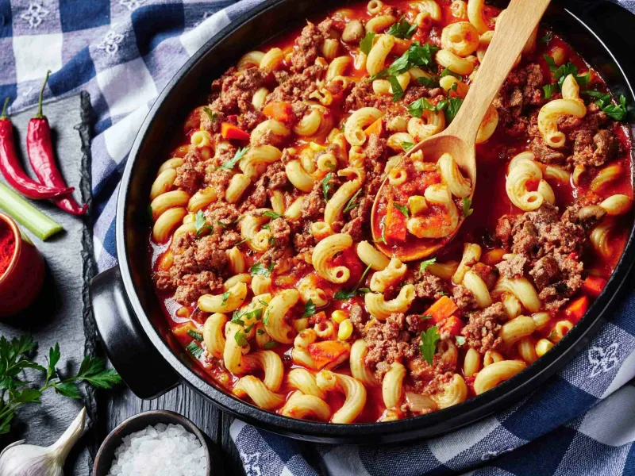

Classic Goulash

Description
Goulash is a soup or stew of meat and vegetables seasoned with paprika and other spices. Originating in Hungary.
Ingredients
- Onion and oil: Cook a large, chopped yellow onion in olive oil.
- Beef: Add two pounds of lean ground beef to the cooked onion. You can use ground turkey if you like.
- Tomato products: You’ll need two cans of diced tomatoes and two cans of tomato sauce.
- Sauces and seasonings: This easy goulash is flavored with fresh garlic, soy sauce, dried Italian herb seasoning, salt, and bay leaves.
- Macaroni: Cook two cups of elbow macaroni in the simmering meat sauce.
Steps
- Step 1 olive oil in a large Dutch oven over medium-high heat. Add onion and cook 3 minutes, stirring often. Add ground beef and cook, breaking up the meat until it is evenly browned, about 5 minutes. Add garlic and cook 3 minutes, stirring often.
- Step 2 Stir in water, tomato sauce, diced tomatoes, soy sauce, Italian seasoning, seasoned salt, and bay leaves. Bring to a simmer, cover and cook 5 minutes, stirring halfway through.
- Step 3 Stir in uncooked macaroni, cover, and simmer over medium heat until pasta is tender, 11 to 13 minutes, stirring occasionally. Remove from heat, discard bay leaves, and serve.
Click Homepage to see more recipes like this one.